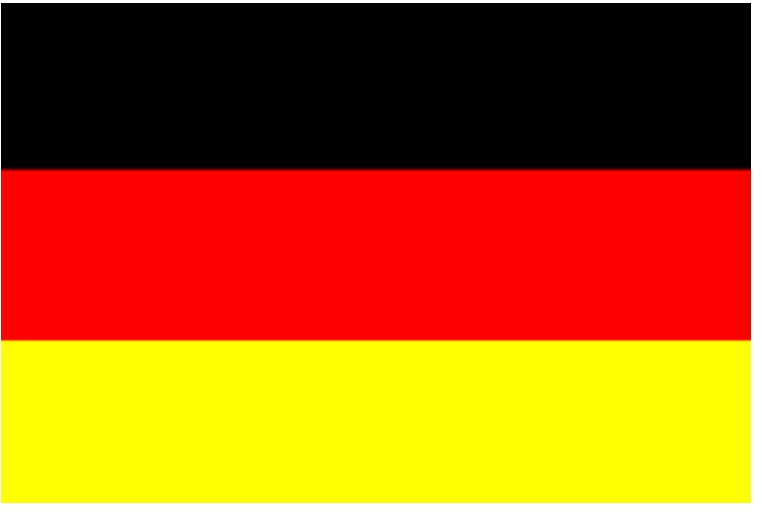

這禮拜使用pythone語法製作出德國國旗

<!-- flag02 start -->
<p>
<script type="text/python3">
from browser import document as doc
import beditor
flag02 = beditor.editor("""# flag02
# flag02
|
""", "kw_editor", "kw_console", "kw__container", "kw_py_src")
# id 為 "flag02" 的按鈕點按時, 執行 Ball 物件中的 prog 方法
doc["flag02"].bind('click', flag02.prog)
這是增加按鈕的指令:
<p><button id="flag02">flag02</button></p>